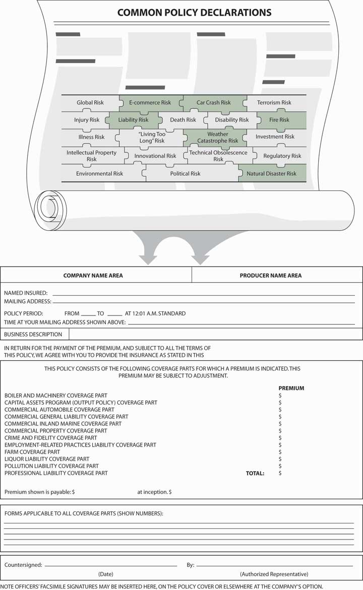

In the preceding four chapters, you read about property and liability exposures generally and how families insure home and auto exposures specifically. Now, we will delve briefly into business, or commercial, insurance. Commercial insurance is a topic for an extensive separate course, but its importance has been reflected to a great extent throughout the previous chapters. Employers who take unnecessary risks or who do not practice prudent risk management may not only cause job losses, they may also cause the loss of pensions and important benefits such as health insurance (discussed in later chapters).
As members of the work force, we drive our employers’ cars and spend many of our waking hours operating machines and computers on business premises. Risks are involved in these activities that require insurance coverage. A case in point is the damage caused by mold in many commercial buildings and schools as well as in homes. Mold can cause headaches, discomfort, and more serious problems. Employers’ property coverage was of great help in remedying the problem. However, as a result of the many claims, insurers have excluded mold coverage or provided very low limits. This and more pertinent issues in different types of commercial coverage will be discussed in this chapter. Issues such as the complexities of directors and officers coverage due to the improper behavior of executives in many large corporations, like AIG, Enron, and WorldCom, are discussed in this chapter, as are the dispute over the limits of coverage of the World Trade Center. The interested student is invited to study in depth and explore the risk and insurance news media for current commercial coverage issues. Also, Case 3 in Chapter 23 "Cases in Holistic Risk Management" relates to the types of commercial coverage embedded in integrated risk programs. The programs described in the case use similar commercial packaged policies that are described in this chapter, which covers the following:
Figure 15.1 Links between the Holistic Risk Puzzle and Commercial Insurance
Source: ISO Common Policy Declarations Form IL DS 00 09 08. Includes copyrighted material of Insurance Services Office, Inc., with its permission.
At this point in our study, we are drilling further down into specific, more complex coverages of the commercial world. Many types of coverage are customized to the needs of the business, but many more use the policies designed by the Insurance Services Office (ISO), which have been approved in most states. We have moved from the narrow realm of personal line coverages, but the basic premises are still the same. The business risks shown in Figure 15.1 "Links between the Holistic Risk Puzzle and Commercial Insurance" do not clearly differentiate between commercial risk and personal hazards. The perils of fire and windstorm do not separate personal homes from commercial buildings, as we saw from the devastation of hurricanes Katrina, Rita, and Wilma in 2005. Our business may be sued for mistakes we make as employees because the business is a separate legal entity. We cannot separate between the commercial world and our personal world when it comes to completing our risk management puzzle to ensure holistic coverage.
Figure 15.1 "Links between the Holistic Risk Puzzle and Commercial Insurance" shows how the picture of our risk puzzles connects to the types of commercial coverage available as a package from the ISO. We use the common policy declarations page, which illustrates the mechanism of this packaged policy. This program permits businesses to select among a variety of insurance options, like a cafeteria where we can choose the items we want to eat and reject those we do not. The program is considered a package because it combines both property and liability options in the same policy, as well as additional coverages as listed in the common policy declarations page in Figure 15.1 "Links between the Holistic Risk Puzzle and Commercial Insurance". Within each of the property and liability coverages are various options available to tailor protection to the particular needs of the insured, as you will see in this chapter.
In this section we elaborate on the following commercial property insurance solutions:
The commercial package policy (CPP) program was started by the Insurance Services Office (ISO) in 1986. Every policy includes three standard elements: the cover page, common policy conditions, and common declarations (shown in Figure 15.1 "Links between the Holistic Risk Puzzle and Commercial Insurance"). It is important to elaborate on the declaration page because it provides a visual aid of the various coverages that can be selected by a business, depending on needs. Some businesses may not need specific parts of the package, but all the elements are listed for the choice of the potential insured. More specifically, the package may include the following commercial coverage elements: boiler and machinery, capital assets program, commercial automobile, commercial general liability, commercial inland marine, commercial property, crime and fidelity, employment-related practices liability, farm liability, liquor liability, pollution liability, and professional liability. Some of these coverages were discussed in prior chapters. The rest of the coverages will be described here.
Most commercial organizations have similar property exposures. Common business property exposures, along with business income exposures, can be insured through the commercial property policyPolicy that provides insurance for direct physical loss to business property and income. form of the commercial package policy. The liability module of the commercial package policy is the commercial general liability (CGL) policyThe liability module of the commercial package policy.. It replaced the liability coverage previously available through the comprehensive general liability policy. In 1986, the CGL was made part of the new modular approach introduced by the ISO in the form of the CPP.
The commercial property policy form of the CPP begins with property declarations and conditions. These provisions identify the covered location, property values (and limits), premiums, deductibles, and other specific aspects of the coverage. These pages make the insurance unique for a given policyholder by identifying that policyholder’s specific exposures. The information in the declarations must be accurate for the desired protection to exist. The remainder of the commercial property coverage consists of the following:
The BPP provides coverage for direct physical loss to buildings and/or contents as described in the policy. Separate sections with distinct limits of insurance are available for both buildings and contents to account for differing needs of insureds. Some insureds will be tenants who do not need building coverage. Others will be landlords who have limited or no need for contents coverage. Many insureds, of course, will need both in varying degrees.
What constitutes a building and business personal property may appear obvious. The insurer, however, must be very precise in defining its intent because, as you know, insurance is a contract of adhesion. Ambiguities, therefore, are generally construed in favor of the insured. Figure 15.2 "Building as Defined in ISO Building and Personal Property Coverage Form (Sample)" lists the items defined as buildings. Figure 15.3 "Business Personal Property as Defined in ISO Building and Personal Property Coverage Form (Sample)" lists those items defined as business personal property.
Figure 15.2 Building as Defined in ISO Building and Personal Property Coverage Form (Sample)

Source: ISO Commercial Property Building and Personal Property Coverage Form CP 00 10 06 07. Includes copyrighted material of Insurance Services Office, Inc., with its permission.
Figure 15.3 Business Personal Property as Defined in ISO Building and Personal Property Coverage Form (Sample)

Source: ISO Commercial Property Building and Personal Property Coverage Form CP 00 10 06 07. Includes copyrighted material of Insurance Services Office, Inc., with its permission.
In addition to limiting coverage by defining building and business personal property, the BPP lists specific property that is excluded from protection. These items are listed in Figure 15.4 "Listed Property Not Covered as Defined in ISO Building and Personal Property Coverage Form (Sample)". Reasons for exclusions in insurance were discussed earlier. Note in Figure 15.4 "Listed Property Not Covered as Defined in ISO Building and Personal Property Coverage Form (Sample)" and in the corresponding section in the policy the exclusion of “electronic data, except as provided under additional coverages.” In part f (4) of Additional Coverages, discussed below and in Figure 15.5 "Additional Coverage and Coverage Extension as Listed in ISO Building and Personal Property Coverage Form", the electronic data that is covered is limited to a loss of up to $2,500 sustained in one year. The low limit on electronic equipment and data losses have propelled many businesses to buy the e-commerce endorsement discussed in Chapter 11 "Property Risk Management". This exclusion is not always noticed by businesses. To ensure adequate coverage, insurers began to offer education programs to risk managers about their cyber-risk exposures.
Figure 15.4 Listed Property Not Covered as Defined in ISO Building and Personal Property Coverage Form (Sample)

Source: ISO Commercial Property Building and Personal Property Coverage Form CP 00 10 06 07. Includes copyrighted material of Insurance Services Office, Inc., with its permission.
Figure 15.5 Additional Coverage and Coverage Extension as Listed in ISO Building and Personal Property Coverage Form

In addition to paying for repair or replacement of the listed property when caused by a covered peril, the BPP pays for other related costs. The BPP also extends coverage under specified conditions. These coverage additions and extensions are listed in Figure 15.5 "Additional Coverage and Coverage Extension as Listed in ISO Building and Personal Property Coverage Form".
The value of these additional and extended coverages can be significant. Debris removal, for example, is a cost that is often overlooked by insureds, but can involve thousands of dollars. Recent tornadoes in the midwestern United States caused heavy property damage, and for many insureds, the most significant costs involved removal of tree limbs and other debris.
An interesting additional coverage is pollutant cleanup and removalA provision that specifies the conditions under which, and the extent to which, protection for cleanup costs are paid by the insurer., a provision that specifies the conditions under which, and the extent to which, protection for cleanup costs are paid by the insurer. Because of large potential liabilities, coverage is narrowly defined as those situations caused by a covered loss, and only for losses at the described premises. The amount of available protection is also limited.
The extended coverages primarily offer protection for properties not included in the definition of covered buildings and personal property. The intent is to provide specific and limited insurance for these properties, which is why they are separated from the general provision. Newly acquired property and property of others, for instance, involve exposures distinct from the general exposures, and they require special attention in the coverage extensions. Some of the coverage extensions offer protection against loss from a short list of causes to property otherwise excluded. Outdoor equipment is an example of property otherwise excluded.
As has been discussed in prior chapters, property insurance payments may be made on either a replacement cost new (RCN) basis or an actual cash value (ACV) basis. If the insured chooses actual cash value, then the provision 7 valuation of section E, loss conditions, applies. The valuation provision involves a number of parts.A detailed description of this part of the policy is beyond the scope of this text. Parts (b) through (e) explain the insurer’s intent for valuation in situations involving RCN when ACV may be difficult to measure or inappropriate. Part (b), for instance, permits payment at RCN for relatively small losses: those valued at $2,500 or less.
If the insured chooses replacement cost new, this optional coverage must be designated in the declarations. Further, the insured ought to recognize the need for higher limits than if ACV is used. Typically, the insurer does not charge a higher rate for RCN coverage; however, more coverage is needed, which translates into a higher premium. For RCN to be paid, the insured must actually repair or replace the covered property. Otherwise, the insurer will pay on an ACV basis.
As just discussed, you need to be cautious when selecting an amount of insurance that will cover your potential losses. The insurer will not pay more than the limit of insurance, except for the coverage extensions and coverage additions (fire department charges, pollution cleanup, and electronic data). In addition to concern over having a sufficient amount of insurance to cover the value of any loss, some insureds need to worry about violation of the coinsurance provision, which is found under section F, additional conditions of the BPP. The policy provides examples of coinsurance. An example of underinsurance in the policy is provided in Table 15.1 "Example of Underinsurance in ISO Building and Personal Property Coverage Form (Sample)" below.
Table 15.1 Example of Underinsurance in ISO Building and Personal Property Coverage Form (Sample)
| Example #1 (Underinsurance) | ||
|---|---|---|
| When: | The value of the property is: | $250,000 |
| The Coinsurance percentage for it is: | 80% | |
| The Limit of Insurance for it is: | $100,000 | |
| The Deductible is: | $250 | |
| The amount of loss is: | $40,000 | |
| Step (1): | $250,000 × 80% = $200,000 | |
| (the minimum amount of insurance to meet your Coinsurance requirements) | ||
| Step (2): | $100,000 ÷ $200,000 = .50 | |
| Step (3): | $40,000 × .50 = $20,000 | |
| Step (4): | $20,000 – $250 = $19,750 | |
| We will pay no more than $19,750. The remaining $20,250 is not covered. | ||
Source: ISO Commercial Property Building and Personal Property Coverage Form CP 00 10 06 07. Includes copyrighted material of Insurance Services Office, Inc., with its permission.
The BPP policy continues to include a coinsurance provision as a major condition of coverage. For most insureds, however, there is a choice to override the coinsurance clause with an agreed value option, found in section G of optional coverages. The agreed value optionRequires the policyholder to buy insurance equal to 100 percent of the value of the property, as determined at the start of the policy. requires the policyholder to buy insurance equal to 100 percent of the value of the property, as determined at the start of the policy. If the insured does so, then the coinsurance provision does not apply and all losses are paid in full, up to the limit of insurance. The wording in the policy is shown in Figure 15.6 "Agreed Value Option in ISO Building and Personal Property Coverage Form (Sample)".
Figure 15.6 Agreed Value Option in ISO Building and Personal Property Coverage Form (Sample)

Source: ISO Commercial Property Building and Personal Property Coverage Form CP 00 10 06 07. Includes copyrighted material of Insurance Services Office, Inc., with its permission.
The agreed value option, however, does not ensure that the policyholder will have sufficient limits of insurance to cover a total loss, especially in times of high inflation. To ward off unwanted retention of loss values above the limit of insurance, the insured can purchase the inflation guard option found in section G, optional coverages (which is discussed in Chapter 13 "Multirisk Management Contracts: Homeowners"). The inflation guard optionProvides for automatic periodic increases in insurance limits; the intent is to keep pace with inflation. provides for automatic periodic increases in insurance limits; the intent is to keep pace with inflation. The amount of the annual increase is shown as a percentage in the declarations.
We have just described some major elements of the BPP form. A full understanding of the coverage requires a thorough reading and consideration of the impact of each provision. As for which perils are covered, the property section of the CPP offers three options: the basic causes of loss form, the broad causes of loss form, and the special causes of loss form.
The basic causes of loss formA named-perils option of the commercial property policy that covers eleven named perils. is a named-perils option of the commercial property policy that covers eleven named perils (see Figure 15.7 "Causes of Loss Forms, ISO Commercial Property Policy"). Some perils are defined and others are not. When exists, the common use of the term, supplemented by court opinions, will provide its meaning.
Fire, for example, is not defined because it has a generally accepted legal meaning. Insurance policies cover only certain fires. While excessive heat may be sufficient for the fire protection to apply, oxidation that results in a flame or glow is typically required. Further, the flame must be hostile, not within some intended container. For instance, if you throw something into a fireplace, intentionally or not, that fire is not hostile and the loss likely is not covered.
A review of the policy and Chapter 13 "Multirisk Management Contracts: Homeowners", where many of these same perils were discussed as they apply to homeowners coverage, may clarify which loss situations are payable on the basic causes of loss form. Review of the exclusions is just as important.
Figure 15.7 Causes of Loss Forms, ISO Commercial Property Policy

Exclusions found in the basic causes of loss form can be categorized as follows:
Most of these exclusions involve events with catastrophic potential, such as floods (the water exclusion).
The broad causes of loss formA named-perils option of the commercial property policy that covers fifteen named perils. is a named-perils option of the commercial property policy that covers fifteen named perils. It differs from the basic form in adding some perils, as listed in Figure 15.7 "Causes of Loss Forms, ISO Commercial Property Policy". Geography may dictate, to some extent, preference for the broad form because of its ice and snow coverage. Also note that the water damage peril is for the “sudden and accidental leakage of water or steam that results from the breaking or cracking of part of an appliance or system containing water or steam (not a sprinkler system).” It does not cover floods or other similar types of catastrophic water damage.
In addition to adding these perils, the broad form includes a provision to cover collapse caused by the named perils or by hidden decay; hidden insect or vermin damage; weight of people or personal property; weight of rain that collects on a roof; or use of defective materials in construction, remodeling, or renovation. While this “collapse” additional coverage does not increase the amount of coverage available (as the other additional coverages do), it does expand the list of covered-loss situations.
The mold exclusion was discussed in prior chapters. The exact wording of the exclusion is excerpted from the ISO Causes of Loss—Broad Form in Figure 15.8 "Mold Exclusion as Listed in the ISO Causes of Loss—Broad Form (Sample)".
Figure 15.8 Mold Exclusion as Listed in the ISO Causes of Loss—Broad Form (Sample)

Source: ISO Commercial Property Causes of Loss—Broad Form CP 10 20 06 07. Includes copyrighted material of Insurance Services Office, Inc., with its permission.
The additional coverage in the policy permits a coverage limit for mold for up to only $15,000, as noted in Additional Coverage—Limited Coverage For “Fungus,” Wet Rot, Dry Rot And Bacteria.
The coverage described under D.2. of this Limited Coverage is limited to $15,000. Regardless of the number of claims, this limit is the most we will pay for the total of all loss or damage arising out of all occurrences of Covered Causes of Loss (other than fire or lightning) and Flood which take place in a 12-month period (starting with the beginning of the present annual policy period). With respect to a particular occurrence of loss which results in ‘fungus,’ wet or dry rot or bacteria, we will not pay more than a total of $15,000 even if the ‘fungus,’ wet or dry rot or bacteria continues to be present or active, or recurs, in a later policy period.ISO Commercial Property Causes of Loss—Broad Form CP 10 20 06 07. Includes copyrighted material of Insurance Services Office, Inc., with its permission.
Business income coverage will be discussed in the next section. For now, it is important to note that, under the mold exclusion and extension of coverage, business interruption income is provided for only thirty days. The days do not need to be consecutive.
Returning to the topic of cause of loss, it is very important to have a clear definition of what is considered a cause of loss for the limits of coverage. Whether or not the peril caused one loss or two separate losses is imperative in understanding the policy. A case in point is that of the complex decisions regarding whether the loss of the two World Trade Center buildings was one loss or two separate losses from two separate causes of loss. The stakes were very high, at $3.5 billion of limit. To understand the issue more clearly, see the box “Liability Limits: One Event or Two?”
Did the September 11 terrorist attacks on the World Trade Center constitute one loss or two? The resolution to this question is far from simple. Controversy surrounding this issue illustrates the ambiguities inherent in some business insurance contracts.
When the two hijacked airplanes struck the World Trade Center towers on the morning of September 11, 2001, the insurance and reinsurance contracts for the property were still under binder agreements. Thus, the wording of the binder agreements became the central issue of this case. At the time of the attacks, real estate executive Larry A. Silverstein’s company had only recently acquired a ninety-nine-year lease on the World Trade Center and had not yet finalized insurance coverage, which provided up to $3.5 billion in property and liability damage per occurrence. With policies of such size, which have large reinsurance requirements, it is not uncommon for the final policies not to be in place when the insured begins operations.
The United Kingdom-based reinsurer Swiss Re had agreed to underwrite 22 percent of coverage on the property once the loss exceeded $10 million, translating into $3.5 billion per occurrence in this case. After the attacks, Swiss Re argued that its preliminary agreement with the lessee defined occurrence as “all losses or damages that are attributable directly or indirectly to one cause or one series of similar causes” and that “all such losses will be added together and the total amount of such losses will be treated as one occurrence irrespective of the period of time or area over which such losses occur.” Silverstein, however, argued that each of the airplane crashes was a separate occurrence and his company was due more than $7 billion for the two attacks.
The fuzziness of the language has been very problematic. This led to two opposing verdicts in separate court cases. In Phase I, the insurers prevailed. In Phase II, Silverstein did. The first jury found that “the form used by broker Willis Group Holdings Ltd., rather than a rival form used by Travelers or other forms, and that the Willis form, known as WilProp 2000, had specific language that defined what happened to the World Trade Center as a single occurrence.” Under this WilProp form, occurrence means “all losses or damages that are attributable directly or indirectly to one cause or to one series of similar causes. All such losses are added together and the total amount of such losses is treated as one occurrence irrespective of the period of time or area over which such losses occur.”
In the second case, the jury agreed with Silverstein that there were two occurrences, at least as defined by the temporary insurance agreements that bound the group of insurers that were involved in the second case. As a result of the second ruling, Silverstein had an open door to collect “as much as twice the $1.1 billion aggregate insured amount per occurrence for which the nine insurers were liable.”
These two contradictory rulings stem from three tests:
The World Trade Center cases were heard in a federal court—the U.S. District Court for the Southern District of New York in Manhattan. Ultimately, however, the matter was settled out of court. In March of 2007, New York Insurance Superintendent Eric Dinallo requested that two representatives from Silverstein Properties and each of the seven insurers involved in the WTC settlement dispute attend a meeting with the state insurance department to bring closure to the ongoing litigation. After weeks of tense negotiations, then-New York Governor Eliot Spitzer and Superintendent Dinallo announced on May 23, 2007, that an agreement between the parties had been successfully brokered. Travelers, Zurich, Swiss RE, Employers Insurance of Wausau, Allianz Global, Industrial Risk Insurers, and Royal Indemnity Company agreed to settle all outstanding court cases and related proceedings for a total of $2 billion. Spitzer and Dinallo described this as the largest settlement in regulatory history. Specific amounts paid each company were not disclosed due to confidentiality agreements. The resolution to this dispute removes the last major obstacle to World Trade Center redevelopment as planned by Silverstein Properties and the New York and New Jersey Port Authority.
To address the underlying problem in the long-delayed loss settlement, Superintendent Dinallo issued a bulletin on October 16, 2008, requiring insurers to provide contract certainty for coverage agreements. This contract certainty called for contract language in insurance policies to be firmed up within thirty days of issuance and the delivery of the policy before, on, or promptly after the policy’s inception date. This would ensure that policy provisions, like the question as to whether the destruction of the twin towers was one insured event or two, are definitively established before a loss. Insurance carriers were given twelve months from the date of Dinallo’s bulletin to bring policies and procedures into compliance with the rule. When asked by the Risk and Insurance Management Society (RIMS) what would happen if carriers failed to meet the compliance deadline, the New York Insurance Department responded that it would “consider regulations spelling out more detailed rules. Regulations have the force of law and penalties can be assessed on licensees.” Willis Group Holdings Chairman and CEO Joe Plumeri praised the contract certainty rule, saying, “There is absolutely no excuse for policies to be delivered months after their inception, an all too commonplace practice in this business.… We’re in the business of keeping promises, and the insurance industry as a whole can do no less. We believe that the industry should police itself, take a principled approach to doing business, and adopt these measures as soon as possible.”
The protracted settlement of the World Trade Center destruction provides a high-profile example of the problems that can arise due to uncertain policy terms. This is not typically an issue with most insurance policies written on standardized forms approved by the state insurance department. In the case of large commercial clients, excess and surplus lines, and reinsurance markets, however, it is likely to come up due to complexity of business scope, degree of risk, and lack of regulatory authority. Should the contract certainty rule in New York prove successful in curtailing disputes, RIMS anticipates that additional states will follow suit in passing similar requirements.
Questions for Discussion
Sources: E. E. Mazier, “Swiss Re Presses ‘One Attack’ Theory,” National Underwriter, Property & Casualty/Risk & Benefits Management Edition, October 29, 2001; E. E. Mazier, “Experts View Swiss Re WTC Lawsuit as Unprecedented Legal Quagmire,” National Underwriter Online News Service, October 31, 2001; Mark E. Ruquet, “Insurers to Lose WTC Case: Agent Univ.,” National Underwriter Online News Service, July 22, 2002; E. E. Mazier, “Judges Sends WTC Claim to Jury Trial,” National Underwriter, Property & Casualty/Risk & Benefits Management Edition, June 10, 2002; E. E. Mazier, “Judge Rules WTC Terror Is One Event,” National Underwriter Online News Service, September 25, 2002; E. E. Mazier, “Swiss Re Silverstein WTC Case in Shambles,” National Underwriter Online News Service, September 27, 2002; “Tale of Two Trials: Contract Language Underlies Contradictory World Trade Center Verdicts,” BestWire, December 9, 2004, accessed March 27, 2009, http://www3.ambest.com/Frames/FrameServer.asp?AltSrc=23&Tab=1&Site=news&refnum=70605; Mark E. Ruquet, “Spitzer Spearheads $2 Billion WTC Insurance Settlement,” National Underwriter, Property & Casualty/Risk & Benefits Management Edition, May 23, 2007, accessed March 29, 2009, www.property-casualty.com/News/2007/5/Pages/Spitzer-Spearheads--2-Billion-WTC-Insurance-Settlement.aspx; Mark E. Ruquet, “WTC Deal Gets Dinallow Off on Right Foot,” National Underwriter, Property & Casualty/Risk & Benefits Management Edition, June 18, 2007, accessed March 29, 2009, www.property-casualty.com/Issues/2007/24/Pages/WTC-Deal-Gets-Dinallo-Off-On-Right-Foot.aspx; Daniel Hays, “New N.Y. Regulation Calls For Policy Contract Certainty,” National Underwriter, Property & Casualty/Risk & Benefits Management Edition, October 16, 2008, accessed March 29, 2009, www.property-casualty.com/News/2008/10/Pages/New-N-Y--Regulation-Calls-For-Policy-Contract-Certainty.aspx; Daniel Hays, “RIMS Reacts to N.Y. Contract Certainty Regulation,” National Underwriter, Property & Casualty/Risk & Benefits Management Edition, October 22, 2008, accessed March 29, 2009, www.property-casualty.com/News/2008/10/Pages/RIMS-Reacts-To-N-Y--Contract-Certainty-Regulation.aspx; Mark E. Ruquet, “Willis CEO Applauds N.Y. Move On Contract Certainty,” National Underwriter, Property & Casualty/Risk & Benefits Management Edition, October 17, 2008, accessed March 29, 2009, http://www.property-casualty.com/News/2008/10/Pages/Willis-CEO-Applauds-N-Y--Move-On-Contract-Certainty.aspx; See all media coverage at the end of 2004 and afterward.
The special causes of loss formAn open perils or all risk coverage option for the commercial property policy. is an open perils or all risk coverage option for the commercial property policy. That is, instead of listing those perils that are covered, the special form provides protection for all causes of loss not specifically excluded. In this form, then, the exclusions define the coverage. Remember that all those exclusions listed in the basic form, except for the “other” category and some aspects of the water damage exclusion, apply to the special form.
Most of the additional exclusions found in the special form relate either to catastrophic potentials or to nonfortuitous events. Among the catastrophe exclusions are boiler or machinery explosions. Nonfortuitous exclusions relate to items such as wear and tear, smoke from agricultural smudging, and damage to a building interior caused by weather conditions, unless the building exterior is damaged first.
Some experts believe that the greatest benefit of the special form over the broad form is coverage against theft. You may recall that theft is not a listed peril in the broad or the basic form. Coverage of theft from any cause, however, is too costly for most policyholders. The special form, therefore, includes some limitations on this protection. For instance, employee dishonesty and loss of property that appears to have been stolen but for which there is no physical evidence of theft (“mysterious disappearance”) are not covered. In addition, certain types of property such as patterns, dyes, furs, jewelry, and tickets are covered against theft only up to specified amounts. The special form also provides coverage for property in transit.
In addition to the cost of repairing and/or replacing damaged or lost property, a business is likely to experience some negative consequences of being unable to use the damaged or lost property, which was noted in previous chapters. Those negative consequences typically involve reduced revenues (sales) or increased expenses, both of which reduce net income (profit). The commercial property policy provides coverage for net income losses through the business income coverage (BIC)Protects against both business interruption and extra expense losses. form. The BIC protects against both business interruption and extra expense losses.
When operations shut down (are interrupted) because of loss to physical property, a business likely loses income. The definition of business income in the BIC is provided in Figure 15.9 "Business Income as Defined in the ISO Business Income (and Extra Expense) Coverage Form (Sample)".
Figure 15.9 Business Income as Defined in the ISO Business Income (and Extra Expense) Coverage Form (Sample)

Source: ISO Commercial Property Business Income (and Extra Expense) Coverage Form CP 00 30 06 07. Includes copyrighted material of Insurance Services Office, Inc., with its permission.
Normal operating expenses are those costs associated with the activity of the business, not the materials that may be consumed by the business. Included among operating expenses are payroll, heat and lighting, advertising, and interest expenses.
The intent of the BIC is to maintain the insured’s same financial position with or without a loss. Payment, therefore, does not cover all lost revenues because those revenues generally cover expenses, some of which will not continue. Yet because some expenses continue, coverage of net income alone is insufficient. An example of a BIC loss is given in “Business Income Coverage (BIC) Hypothetical Loss.”
It is important to note the wording in the policy. The coverage applies only to business interruption for damages to the property in the declaration. More specifically, the policy states,
We will pay for the actual loss of Business Income you sustain due to the necessary ‘suspension’ of your ‘operations’ during the ‘period of restoration.’ The ‘suspension’ must be caused by direct physical loss of or damage to property at premises which are described in the Declarations and for which a Business Income Limit of Insurance is shown in the Declarations. The loss or damage must be caused by or result from a Covered Cause of Loss. With respect to loss of or damage to personal property in the open or personal property in a vehicle, the described premises include the area within 100 feet of the site at which the described premises are located.ISO Commercial Property Business Income (and Extra Expense) Coverage Form CP 00 30 06 07. Includes copyrighted material of Insurance Services Office, Inc., with its permission.
Under this policy, businesses that sustained losses because of the economic backlash and fear after September 11, 2001, would not be covered for their loss of income. For discussion of this issue, read the box “Business Interruption with and without Direct Physical Loss” in Chapter 11 "Property Risk Management".
As noted above in the discussion of the BPP policy, this part of the commercial package also limits coverage for interruption to computer operations under Section 4, as presented in Figure 15.10 "Interruption of Computer Operations Coverage Limitation in the ISO Business Income (and Extra Expense) Coverage Form (Sample)".
Figure 15.10 Interruption of Computer Operations Coverage Limitation in the ISO Business Income (and Extra Expense) Coverage Form (Sample)

Source: ISO Commercial Property Business Income (and Extra Expense) Coverage Form CP 00 30 06 07. Includes copyrighted material of Insurance Services Office, Inc., with its permission.
In Additional Coverage, the amount available for interruption of computer operation is $2,500. No wonder many businesses today purchase the e-commerce endorsement or buy the new policies from the companies described in Chapter 11 "Property Risk Management" and Chapter 12 "The Liability Risk Management".
In addition to losing sales, a business may need to incur various expenses following property damage in order to minimize further loss of sales. These extra expenses are also covered by the BIC. A bank, for example, could not simply shut down operations if a fire destroyed its building because the bank’s customers rely on having ready access to financial services. As a result, the bank is likely to set up operations at a temporary location (thus reducing the extent of lost revenues) while the damaged property is being repaired. The rent at the temporary location plus any increase in other expenses would be considered covered extra expenses.
The same three perils options available for the BPP are also available for the BIC. Because the BIC requires that the covered income loss results from direct physical loss or damage to property described in the declarations, most insureds choose the same causes of loss form for both the BPP and the BIC. Now, we show a more detailed example of a hypothetical loss that occurred during the Chicago flood in 1992.
In the spring of 1992, Chicago experienced an unusual flood apparently caused by damage to an underground tunnel system. Many firms were required to shut down offices in the damaged area. Among them were large accounting organizations, just two weeks before the tax deadline of April 15. Thus, the losses were magnified by the fact that the flood occurred during the tax season. Assume the following hypothetical conditions for one of those firms.
| Preloss Financial Information | |
|---|---|
| Average monthly revenues | $500,000 |
| Average April revenues (stated in 1992 dollars) | $700,000 |
| Average monthly payroll | $300,000 |
| Average April payroll | $550,000 |
| Monthly heat, electricity, water | $25,000 |
| Monthly rent for leased office | $45,000 |
| Monthly interest expense | $10,000 |
| Monthly marketing expense | $15,000 |
| Monthly other expenses | $10,000 |
| Net income in April | $45,000 |
| Postloss Financial Information for April 1992 | |
|---|---|
| Revenues | $600,000 |
| Payroll | $540,000 |
| Utilities | $30,000 |
| Rent on downtown space | $0 |
| Rent for temporary space | $50,000 |
| Interest expense | $10,000 |
| Marketing expense | $22,000 |
| Other expenses | $20,000 |
| Net loss | ($72,000) |
This firm experienced both a reduction in revenue and an increase in expenses. The resulting profit (net income) loss is the covered loss in the BIC. For this example, the loss equals $117,000, the sum of the income not received ($45,000) that would have been expected without a loss, plus the actual lost income ($72,000) incurred. Such a substantial loss for a two-week period is not unusual.
The coinsurance provision of the BIC is one of the more confusing parts of any insurance policy. Its purpose is the same as that discussed earlier, which is to maintain equity in pricing. Its application is also similar. The difficulty comes in defining the underlying value of the full exposure, which is needed to apply any coinsurance provision. Following in Table 15.2 "Example of Underinsurance in ISO Business Income (and Extra Expense) Coverage Form (Sample)" is an underinsurance example from a BIC policy. More examples are provided in the policy sample.
Table 15.2 Example of Underinsurance in ISO Business Income (and Extra Expense) Coverage Form (Sample)
| Example #1 (Underinsurance) | ||
|---|---|---|
| When: | The Net Income and operating expenses for the 12 months following the inception, or last previous anniversary date, of this policy at the described premises would have been: | $400,000 |
| The Coinsurance percentage is: | 50% | |
| The Limit of Insurance is: | $150,000 | |
| The amount of loss is: | $80,000 | |
| Step (1): | $400,000 × 50% = $200,000 | |
| (the minimum amount of insurance to meet your Coinsurance requirements) | ||
| Step (2): | $150,000 ÷ $200,000 = .75 | |
| Step (3): | $80,000 × .75 = $60,000 | |
| We will pay no more than $60,000. The remaining $20,000 is not covered. | ||
Source: ISO Commercial Property Business Income (and Extra Expense) Coverage Form CP 00 30 06 07. Includes copyrighted material of Insurance Services Office, Inc., with its permission.
Remember that a BIC loss equals net income plus continuing operating expenses. Coinsurance, however, applies to net income plus all operating expenses, a larger value. The amount of insurance required to meet the coinsurance provision is some percentage of this value, with the percentage determined by what the insured expects to be the maximum period of interruption. If a maximum interruption of six months is expected, for example, the proper coinsurance percentage is 50 percent (6/12). If it is nine months, a coinsurance percentage of 75 percent (9/12) is appropriate.
Because of the complexity of the coinsurance provision, however, many insureds choose an agreed value option. This option works under the same principles as those discussed with regard to the BPP. Using the example illustrated in “Business Income Coverage (BIC) Hypothetical Loss,” we can demonstrate the application of the coinsurance provision. Coinsurance requirements apply to net income plus operating expenses ($95,000 plus $405,000 per month on average, or $6,000,000 for the year). If a 50 percent coinsurance provision is used because the expected maximum period of interruption is six months, then the amount of insurance required is $3,000,000 (0.50 × $6,000,000). If the April figures are representative (which is really not the case with a tax accounting office), then a six-month interruption would result in a much lower loss.
The BIC includes a number of options designed to modify coverage for the insured’s specific needs. Three options that affect the coinsurance provision are the monthly limit of indemnity, maximum period of indemnity, and payroll endorsements. For better understanding, the student is invited to read the policy in addition to reading the following explanations.
The monthly limit of indemnityNegates the coinsurance provision of business income coverage; instead, a total limit is listed, as is the percentage of that limit available each month. negates the coinsurance provision of business income coverage; instead, a total limit is listed, as is the percentage of that limit available each month. The policy uses the example of a $120,000 limit and ¼ monthly amount. For this example, only $30,000 (¼ × $120,000) is available each month. An organization with stable earnings and expectations of a short period of restoration would likely find this option worthwhile.
The maximum period of indemnityOption also negates the coinsurance provision of the BIC; instead, this option limits the duration of coverage to 120 days (or until the limit is reached, whichever comes first). option also negates the coinsurance provision of the BIC; instead, this option limits the duration of coverage to 120 days (or until the limit is reached, whichever comes first). Both the maximum period of indemnity and the monthly limit of indemnity address the fact that the standard policy cannot be used with a coinsurance provision of less than 50 percent (six months).
Instead of negating the coinsurance provision, as do the two options just discussed, the payroll endorsementAllows the insured to deduct some or all payroll expenses from the value of operating expenses before calculating the coinsurance requirement. allows the insured to deduct some or all payroll expenses from the value of operating expenses before calculating the coinsurance requirement. Doing so allows the insured to purchase less insurance (and usually pay lower premiums) and still meet the coinsurance provision. It also excludes payroll from covered expenses, however, so the insured must feel confident that payroll would not be maintained during a shutdown. A common payroll endorsement includes ninety days of payroll expense in the coinsurance calculation (and BIC coverage), assuming that a short shutdown might allow the insured to continue to pay employees. For a longer shutdown, termination of employment might be more cost effective.
In this section you studied the commercial package policy (CPP) and the commercial property component of the CPP:
| Preloss Financial Information | |
|---|---|
| Average monthly revenues | $220,000 |
| Average monthly payroll | $100,000 |
| Monthly heat, electricity, water | $25,000 |
| Monthly rent for leased office | $25,000 |
| Monthly interest expense | $10,000 |
| Monthly marketing expense | $5,000 |
| Monthly other expenses | $5,000 |
| Postloss Financial Information for One Month | |
|---|---|
| Revenues | $170,000 |
| Payroll | $100,000 |
| Utilities | $30,000 |
| Rent on leased office | $0 |
| Rent for temporary space | $50,000 |
| Interest expense | $0 |
| Marketing expense | $6,000 |
| Other expenses | $12,000 |
Assume that the Steinman Shoe Station owns the $1 million building in which it operates, maintains inventory and other business properties in the building worth $700,000, and often has possession of people’s property up to a value of $50,000 while they are being repaired. For each of the following losses, what, if anything, will Steinman’s BPP insurer pay? Limits are $1 million on coverage A and $800,000 on coverage B. The broad causes-of-loss form is used and there was no e-commerce endorsement. Explain your answers.
Steinman also bought a BIC with a limit of $250,000 and a 50 percent coinsurance clause. No other endorsements are used. A limited income statement for last year is shown below.
| Revenues | $2,000,000 |
|---|---|
| Less: | |
| Cost of goods sold | $800,000 |
| Utilities | $200,000 |
| Payroll | $400,000 |
| Other expenses | $300,000 |
| $1,700,000 | |
| Profit | $300,000 |
In this section we elaborate on the different types of optional property coverage available in the CPP offering insurance on property otherwise excluded or to meet the special needs of businesses:
The commercial package policy is designed to accommodate separate and sometimes special property needs of insureds. Refer again to Figure 15.1 "Links between the Holistic Risk Puzzle and Commercial Insurance".
The program includes enhancements that protect businesses and government entities against the following:
Historically, crime losses have been insured separately from other property losses. Perhaps the separation was intended to standardize the risk; exposure to crime loss may involve quite different loss-control needs and frequency and severity estimates from those associated with exposure to fire, weather damage, or other BPP type losses. Furthermore, within the crime coverage, employee dishonesty has typically been insured separately from other property crimes, likely also in an effort to recognize variations in risk and loss-control needs between the two. Employee dishonesty protection began as a bond (called a fidelity bondA guarantee provided to employers by each employee promising loyalty and faithfulness and stipulating a mechanism for financial recovery should the promise be broken.), which was a guarantee provided to employers by each employee promising loyalty and faithfulness and stipulating a mechanism for financial recovery should the promise be broken. As a result, bonding companies developed to protect against employee crimes, while insurers expanded their coverage separately to protect against other property-related crimes.
Today, ISO has a Crime and Fidelity insurance program.ISO press release at http://www.iso.com/products/2200/prod2241.html (accessed March 27, 2009). The ISO enhancements include coverage for losses caused by employee theft of the following:
Also available is coverage for additional perils, including the following:
You may recall that the BPP covers personal property while it is located at the described premises. Many businesses, however, move property from one location to another or have specialized personal property that requires insurance coverage not intended by the BPP. These needs are often met by inland marine (IM) insurance. Despite its name, inland marine (IM) insuranceCovers nonwater forms of transportation such as rails and trucking. covers nonwater forms of transportation such as rails and trucking.
Inland marine insurance is an outgrowth of ocean marine insuranceCoverage for property while being transported by water (including coverage for the vessels doing the transporting)., which is coverage for property while being transported by water (including coverage for the vessels doing the transporting). IM tends to be broad coverage, often on an open-perils basis and generally for replacement cost. Exclusions tend to involve nonfortuitous events, such as wear and tear and intentionally caused loss. The protection IM provides is for inland transportation and specialized equipment.
When a boiler or similar piece of machinery explodes, the cost tends to be enormous. Typically, the entire building is destroyed, as are surrounding properties. Anyone in or near the building may be killed or badly injured. Furthermore, the overwhelming majority of such explosions can be prevented through periodic inspection and excellent maintenance. As a result, a boiler inspection industry developed, which ultimately became an inspection and insurance industry.
Boiler and machinery (B&M) insuranceProtects against loss that results from property damage to the insured’s own property and to nonowned property caused by explosions or other sudden breakdowns of boilers and machinery. protects against loss that results from property damage to the insured’s own property and to nonowned property caused by explosions or other sudden breakdowns of boilers and machinery. (Bodily injury liability coverage can be added by endorsement.) The bulk of the premium, however, goes toward costs of inspection and loss control. Any business that uses a boiler or similar type of machinery needs to consider purchase of this coverage because the potential loss is large while the probability of loss is low if proper care is maintained.
The Insurance Services Office introduced “the ISO Capital Assets Program—a manufacturer’s output type policy—that enables insurers to provide large and medium commercial accounts superior coverage and pricing flexibility for buildings and business personal property.”ISO press release at http://www.iso.com/press_releases/2002/01_22_02.html, January 22, 2002 (accessed March 27, 2009).
The Capital Assets ProgramProvides businesses coverage on a blanket, replacement-cost basis without a coinsurance provision to sufficiently large accounts. provides businesses coverage on a blanket, replacement-cost basis without a coinsurance provision to sufficiently large accounts. The program also provides options to value property at actual cash value, agreed value, or (for buildings) functional replacement cost. Under the program, “Business income and extra expense coverages are written into the form and can be activated by entries on the policy declaration page.”
In 1976, the ISO developed its first business owners policy, which was designed for small businesses in the office, mercantile, and processing categories and for apartment houses and condominium associations. The intent of the business owners policy (BOP)Provides a comprehensive policy that would omit the need for small businesses to make numerous decisions while also incorporating coverage on exposures often overlooked. was to provide a comprehensive policy that would omit the need for small businesses to make numerous decisions, while also incorporating coverage on exposures often overlooked. The original BOP was one policy covering both property and liability exposures. The current program incorporates the BOP into the commercial package policy through separate property and liability policies designed for small businesses. When these coverages are combined, they provide protection nearly identical to the old BOP policy.
The property portion of the business owners program covers both direct and consequential losses, combining the types of coverage found in the BPP and BIC. An inflation guard is standard, as is a seasonal fluctuation for personal property. The inflation guard increases the building’s coverage limit by some stated percentage automatically each year. The seasonal fluctuationPermits recovery of lost personal property up to 125 percent of the declared limit, as long as the average value of the personal property over the prior twelve months is not greater than the limit. permits recovery of lost personal property up to 125 percent of the declared limit, as long as the average value of the personal property over the prior twelve months is not greater than the limit. For organizations with fluctuating stock values, this provision is helpful. Coverage is on a replacement cost new basis without a coinsurance provision.
The policy also provides business income loss for one year of interruption without a stated dollar limit or coinsurance requirement. Many small businesses are prone to ignore this exposure, which is why the coverage is included automatically.
Coverage can be purchased either on a named-perils or an open-risk basis. The named-perils form covers the causes of loss listed in Figure 15.7 "Causes of Loss Forms, ISO Commercial Property Policy", which are the same perils available in other coverage forms. One additional peril, transportation, is also covered in the BOP. The transportation peril affords some inland marine protection.
The business owners program was released by the ISO in June 2002.“New ISO Offering for Smaller Businesses,” National Underwriter Online News Service, June 3, 2002. The press release by ISO “ISO’s NEW BUSINESSOWNERS PROGRAM SIMPLIFIES RATING AND EXPANDS COVERAGE ELIGIBILITY—ISO IntegRater™ and AscendantOne™ Updated for the New BOP” is available at http://www.iso.com/press_releases/2002/06_03_02.html. It expanded some risk categories eligible for coverage with a new section, “Commercial Lines Manual.” The BOP includes “computer coverage, business income from dependent properties coverage, and fire extinguisher system recharge expense.” There are some new optional endorsements, such as “coverage for food contamination, water backup and sump overflow, functional building and personal property valuation, liquor liability, employee benefits liability, and several coverage and exclusion options for pollution liability.”Businessowners Endorsement: BP 05 11 01 02 (N/A To Standard Fire Policy States); Businessowners Endorsement: BP 05 12 02 (Applies In Standard Fire Policy States); Businessowners Endorsement: BP 05 13 01 02.
In this section you studied the separate, special property needs of insureds that can be resolved through the CPP:
In this section we elaborate on commercial liability insurance solutions:
As discussed in Chapter 12 "The Liability Risk Management", businesses have a wide variety of liability exposures. Many of these are insurable through the CGL.
The format of the CGL is very similar to that of the BPP and BIC. The CGL contract includes the following:
The CGL itself is comprised of the following five sections:
Coverage is available either on an occurrence or on a claims-made basis. Claims-made basisA policy that limits the period in which the claims for injuries need to be made. is a policy that limits the period in which the claims for injuries need to be made. Under such a program, claims for injuries that occurred thirty years ago cannot be covered. The claim needs to be filed (made) during the coverage period for injuries that occur during the same period or the designated retroactive time. This limitation is the result of insurers having to pay for asbestos injuries that occurred years before knowledge of the exposure outcome was discovered. Insurers that provided coverage for those injuries thirty years ago were required to pay regardless of when the claims were made. Claims for past unforeseen injuries were not included in the loss development (discussed in Chapter 7 "Insurance Operations") and caused major unexpected losses to the insurance industry. If the claims-made option is chosen, a sixth section is incorporated into the policy, the extended reporting periods provision.
The CGL provides three types of coverage:
Each coverage involves its own insuring agreement and set of exclusions. Each also provides a distinct limit of insurance, although an aggregate limit may apply to the sum of all costs under each coverage for the policy period. Other aggregates also apply, as discussed in the policy limits section below.
The CGL provides open-perils coverage for the insured’s liabilities due to bodily injury or property damage experienced by others. The bodily injury or property damage must arise out of an occurrence, which is “an accident, including continuous or repeated exposure to substantially the same general harmful conditions.” If the commercial general liability policy is a claims-made policyA policy that limits the period in which the claims for injuries need to be made., the event causing liability must take place after a designated retroactive dateDate after which an event causing liability must take place in order to be covered., and a claim for damages must be made during the policy period. Under the claims-made policy, an insured’s liability is covered (assuming no other applicable exclusions) if the event causing liability occurs after some specified retroactive date and the claim for payment by the plaintiff is made within the policy period. This differs from an occurrence policyCovers liability for events that take place within the policy period, regardless of when the plaintiff makes a claim., which covers liability for events that take place within the policy period, regardless of when the plaintiff makes a claim. The claims-made policy may lessen the insurer’s uncertainty about likely future payments because the time lag between premium payments and loss payments generally is smaller with claims-made than with occurrence.
If the claims-made policy is purchased, a retroactive date must be defined. In addition, an extended reporting period must be included for the policy to be legal. The extended reporting periodProvides coverage for claims brought after the policy period has expired for events that occurred between the retroactive date and the end of the policy period. applies if a claims-made policy is canceled and provides coverage for claims brought after the policy period has expired for events that occurred between the retroactive date and the end of the policy period. An example is shown in Table 15.3 "Claims-Made Coverage Example". The standard extended reporting form is very limited, so insureds may purchase additional extensions.
Table 15.3 Claims-Made Coverage Example
|
Assume a policy purchased on January 1, 1990, that provides $1,000,000 per occurrence of claims-made coverage with a retroactive date of January 1, 1988, and a one-year policy period. Further assume that the policy was canceled on December 31, 1990, and that the insured purchased a one-year extended reporting period. The following losses occur: |
|||
| Amount | Date of Injury | Date of Claim | Insurer Responsibility |
| $100,000 | 3/15/88 | 3/15/89 | −0The claim precedes the coverage period. No coverage exists under this policy. |
| $100,000 | 3/15/88 | 3/15/90 | 100,000The event follows the retroactive date and the claim is brought during the policy period. |
| $100,000 | 3/15/90 | 3/15/91 | 100,000The event follows the retroactive date and the claim is brought in the extended reporting period. |
| $100,000 | 3/15/90 | 3/15/92 | −0The claim follows the end of the reporting period. |
| $100,000 | 3/15/91 | 3/15/91 | −0Even though the claim is brought within the extended reporting period, the event occurs. |
The claims-made policy was introduced (first in medical malpractice insurance, later in other policies) in response to increased uncertainty about future liabilities. As explained above, an occurrence policy could be sold today, and liability associated with it could be determined thirty years later or more. With changing legal and social norms, the inability of insurers to feel confident with their estimates of ultimate liabilities (for pricing purposes) led them to develop the claims-made coverage.
Bodily injury (BI)Bodily injury, sickness, or disease sustained by a person, including death resulting from any of these at any time. is defined as bodily injury, sickness, or disease sustained by a person, including death resulting from any of these at any time. Property damage (PD)Physical injury to tangible property, including all resulting loss of use of that property, or loss of use of tangible property that is not physically injured. is defined as (a) physical injury to tangible property, including all resulting loss of use of that property, or (b) loss of use of tangible property that is not physically injured.
In addition to covering an insured’s liability due to bodily injury or property damage, the insurer promises to defend against suits claiming such injuries. The cost of defense is provided in addition to the limits of insurance available for payment of settlements or judgments, as is payment of interest that accrues after entry of the judgment against the insured. The insurer, however, has the general right to settle any suit as it deems appropriate. Furthermore, the insurer’s obligation to defend against liability ends when it has paid out its limits for any of the coverages in settlements or judgments.
So far, this coverage sounds extremely broad, and it is. A long list of exclusions, however, defines the coverage more specifically. Figure 15.11 "Exclusions to Coverage A—Bodily Injury and Property Damage Liability in the ISO Commercial General Liability Policy" provides the list of exclusions.
Figure 15.11 Exclusions to Coverage A—Bodily Injury and Property Damage Liability in the ISO Commercial General Liability Policy

We can discuss the exclusions as they relate to the four general reasons for exclusions, as presented earlier. Several relate to situations that may be nonfortuitous. Exclusion (a), which denies coverage for intentionally caused harm, clearly limits nonfortuitous events. Exclusion (b), an exclusion of contractually assumed liability, also could be considered a nonfortuitous event because the insured chose to enter into the relevant contract. Pollution liability (exclusion f), likewise, may arise from activities that were known to be dangerous. Damage to the insured’s own products or work (exclusions k and l) indicates that the insurer is not willing to provide a product warranty to cover the insured’s poor workmanship, a controllable situation.
A number of exclusions are intended to standardize the risk and/or to limit duplicate coverage when other coverage does or should exist. Liquor liability (exclusion c), for instance, is not standard across insureds. Entities with a liquor exposure must purchase separate coverage to protect against it. Likewise, we know that workers’ compensation and employers’ liability (exclusions d and e) all are covered by specialized contracts. Separate policies also exist for autos, aircraft, watercraft, and mobile equipment (exclusions g and h) because these risks will not be standard for organizations with similar general liability exposures.
The category of property owned by or in the care, custody, and control of the insured is also excluded (exclusion m). These exposures are best handled in a property insurance policy, in part because the insured cannot be liable to itself for damage, and in part because the damage should be covered whether or not it is caused by the insured’s carelessness.
Some exclusions apply because of the catastrophic potential of certain situations. In addition to the possible nonfortuitous occurrence of pollution losses, the potential damages are catastrophic. Cost estimates to clean hazardous waste sites in the United States run into the hundreds of billions of dollars, as discussed in Chapter 12 "The Liability Risk Management". Similarly, war-related injuries (exclusion i) are likely to affect thousands, possibly hundreds of thousands of people simultaneously.
The war risk practically defines catastrophe because it affects so many people from a single situation, not too unlike a product recall (exclusion n). Most manufacturers produce tens of thousands of products in each batch. If a recall is necessary, the whole batch generally is affected. This situation also has some element of nonfortuity, in that the insured has some control over deciding upon a recall, although limited separate coverage is available for this exposure. A memorable example occurred when Johnson & Johnson recalled all of its Tylenol products following the lethal tampering of several boxes. Even though Johnson & Johnson undertook the recall to prevent future injury (and possible liability), its insurer denied coverage for the recall costs. Insureds can buy an endorsement for product recall.
Another exclusion is the fungi and bacteria exclusion. CGL has a mold exclusion that applies to bodily injury and property damage only. The endorsement states that payment for liability is excluded for the following:
Coverage A provides protection against physical injury or damage due to the insured’s activities. Despite the many exclusions, it provides broad coverage for premises, products, completed work, and other liabilities. It does not provide protection, however, against the liabilities arising out of nonphysical injuries. Coverage B does provide that protection. The policy states,
“We will pay those sums that the insured becomes legally obligated to pay as damages because of ‘personal and advertising injury’ to which this insurance applies. We will have the right and duty to defend the insured against any ‘suit’ seeking those damages. However, we will have no duty to defend the insured against any ‘suit’ seeking damages for ‘personal and advertising injury’ to which this insurance does not apply. We may, at our discretion, investigate any offense and settle any claim or ‘suit’ that may result.ISO Commercial General Liability Coverage Form CG 00 0110 01. Includes copyrighted material of Insurance Services Office, Inc., with its permission.”
The exclusions for Coverage B, Personal and Advertising Injury Liability, are listed in Figure 15.12 "Exclusions to Coverage B—Personal and Advertising Injury Liability in the ISO Commercial General Liability Policy".
The exclusions eliminate intentional acts (nonaccidental acts), acts that occurred before the coverage began, criminal acts, and contractual liability. False statements and failure to conform to statements and infringements of copyrights and trademarks are also excluded. As in other coverages, electronic chat rooms and Internet businesses are excluded (see Chapter 12 "The Liability Risk Management"). In this context, insureds in the Internet and media businesses are completely excluded from coverage B under the 2001 CGL policy. The particular exclusion of unauthorized use of another’s name and product was also noted in Chapter 12 "The Liability Risk Management". Because pollution and pollution related-risks are considered catastrophic, they are excluded as well.
Figure 15.12 Exclusions to Coverage B—Personal and Advertising Injury Liability in the ISO Commercial General Liability Policy

We have discussed medical payments coverage in both the homeowners and auto policies. The CGL medical payments coverage is similar to what is found in the homeowners policy. It provides payment for first aid; necessary medical and dental treatment; and ambulance, hospital, professional nursing, and funeral services to persons other than the insured. The intent is to pay these amounts to people injured on the insured’s premises or due to the insured’s operations, regardless of fault. That is, medical payments coverage is not a liability protection.
The medical payments coverage is not intended to provide health insurance to the insured nor to any employees of the insured (or anyone eligible for workers’ compensation). Nor will it duplicate coverage provided in other sections of the CGL or fill in where Coverage A excludes protection. War is also excluded. A list of exclusions to Coverage C is provided in Figure 15.13 "Exclusions to Coverage C—Medical Payment in the ISO Commercial General Liability Policy".
Figure 15.13 Exclusions to Coverage C—Medical Payment in the ISO Commercial General Liability Policy

Supplementary payments are for bodily injury, property damage, and personal injury coverage. The insurer pays for the claim or suit, the cost for bonds up to $250, all expenses for investigations it conducts, and “all reasonable expenses incurred by the insured.” As long as the list of conditions detailed in the policy is met, the insurer pays all attorneys’ fees that it incurs in the defense of the insured. The obligation to defend and to pay for attorneys’ fees and necessary litigation expenses as supplementary payments ends when the insurer has reached the applicable limit of insurance in the payment of judgments or settlements.
Section II of the CGL is very specific and detailed in defining whose liability is covered. The following are insureds:
The volunteer workers of the business are also insured. However, none of the employees or volunteer workers are insureds for bodily injury or personal and advertising injury to the insured or damage to property that is owned or occupied by the insured.
The limits of insurance, as you know by now, define the maximum responsibility of the insurer under specified situations. A portion of the declaration for CGL is shown in Figure 15.14 "Section of the ISO Commercial General Liability Declaration Page ((Sample))".
Figure 15.14 Section of the ISO Commercial General Liability Declaration Page ((Sample))

Source: ISO Commercial General Liability Coverage Form CG 00 0110 01. Includes copyrighted material of Insurance Services Office, Inc., with its permission.
The policy clarifies the limits of insurance shown in the declarations and the applicable rules. The general aggregate limit is the most that the insurer pays for the sum of
The limits are paid regardless of the number of insureds, claims made, or suits brought, or persons or organizations making claims or bringing suits. The limits apply separately to each consecutive annual period.
Like all other policies, the CGL includes an extensive conditions section, primarily outlining the duties of the insured and insurer. Subrogation, other insurance, proper action in the event of loss, and similar provisions are spelled out in the conditions section.
Words used in insurance policies might not have the same interpretation as when they are used in other documents or conversations. To specify its intent, insurers define significant terms (remember that insurance is a contract of adhesion, so ambiguities are read in the manner most favorable to the insured). Some defined terms in the CGL have already been discussed, including “bodily injury,” “property damage,” “personal injury,” “advertising injury,” and “occurrence.” In total, twenty-two terms are defined in the CGL. Like the rest of the policy, a full interpretation of coverage requires reading and analyzing these definitions. The problems that arise out of interpretation of the CGL policy wording is discussed in the box “Liability Limits: One Event or Two?”
Today, $1,000,000 of liability coverage, the standard limit for a CGL, is insufficient for many businesses. Furthermore, liabilities other than those covered by the CGL may be of significant importance to a business. To obtain additional amounts and a broader scope of coverage, a business can purchase a commercial umbrella liability policy.
The umbrella liability policyProvides excess coverage over underlying insurance. Except for excluded risks, it also provides excess over a specified amount, for which there is no underlying coverage. provides excess coverage over underlying insurance. Except for excluded risks, it also provides excess over a specified amount, such as $25,000, for which there is no underlying coverage. Typically, you are required to have specified amounts of underlying coverage, such as the CGL with a $1,000,000 limit and automobile insurance with the same limit. When a loss occurs, the basic contracts pay within their limits and then the umbrella policy pays until its limits are exhausted. If there is no underlying coverage for a loss covered by the umbrella, you pay the first $25,000 (or whatever is the specified retention), and the umbrella insurer pays the excess.
The umbrella policy covers bodily injury, property damage, personal injury, and advertising injury liability, similar to what is provided in the CGL. Medical expense coverage is not included. The limits of coverage, however, are intended to be quite high, and the exclusions are not as extensive as those found in the CGL. Most businesses find umbrella liability coverage an essential part of their risk management operations.
In this section you studied the commercial general liability component of the CPP and the umbrella liability option:
Five sections make up the CGL: coverages, who is an insured, limits of insurance, conditions, and definitions.
Assume that the Baker-Leetch Pet Store has a CGL with a $1,000,000 aggregate limit. The policy commences July 1, 2008, and ends June 30, 2009.
In this section we elaborate on additional liability risks and insurance solutions:
What about the business liability exposures not covered by the CGL? Space limitations prohibit discussing all of them, but several merit some attention: automobile, professional liability, and workers’ compensation. Workers’ compensation is discussed in more detail in Chapter 16 "Risks Related to the Job: Workers’ Compensation and Unemployment Compensation".
If the business is a proprietorship and the only vehicles used are private passenger automobiles, the personal auto policy or a similar policy is available to cover the automobile exposure. If the business is a partnership or corporation or uses other types of vehicles, other forms of automobile insurance must be purchased if the exposure is to be insured. The coverages are similar to the automobile insurance discussed in Chapter 14 "Multirisk Management Contracts: Auto".
The nature and significance of the professional liability risk were discussed in Chapter 12 "The Liability Risk Management". Most professionals insure this exposure separately with malpractice insurance, errors and omissions insurance, or directors and officers (D&O) insurance. These liability coverages were discussed in Chapter 12 "The Liability Risk Management". You are urged to review the current conditions of the D&O coverage featured in the box “Directors and Officers Coverage in the Limelight.”
William Webster had enjoyed a long and distinguished career in public service, most notably as the only person ever to head both the FBI (under President Carter) and the CIA (under President Reagan). The onetime U.S. District Court judge retired from public office in 1991, at age sixty-seven, and devoted his time to practicing law in Washington, D.C., and sitting on the boards of several large corporations. One of them was U.S. Technologies, which develops and supports emerging Internet companies. But in July 2002, Webster was told the company could no longer provide adequate liability insurance to its directors and officers. He resigned.
All publicly traded companies must have a board of directors, a group of people elected by the stockholders to govern the company. Generally, the board is charged with selecting and supervising the executive officers, setting overall corporate policy, and overseeing the preparation of financial statements. This role leaves directors vulnerable to lawsuits from shareholders, creditors, customers, or employees on charges such as abuse of authority, libel or slander, and—the biggest concern these days—financial mismanagement. Board members at many corporations became concerned about their personal liability and started taking a closer look at the insurance known as directors and officers (D&O) coverage that is supposed to protect them.
Not surprisingly, the corporate scandals of 2001 and 2002–2004 had driven up the cost of D&O insurance. Following WorldCom’s June 2002 announcement that it had “inappropriately classified” nearly $4 billion in expenses, D&O insurers pulled back from covering not just WorldCom but also its banks, its suppliers, and its business customers. Another reason for the shrinking D&O insurance pool was the late 1990s trend toward astronomical settlements in class-action securities lawsuits. By 2002, high-risk companies—in the aircraft, financial, health care, technology, and telecommunications industries—were paying triple what they used to for D&O, if they could find coverage at all.
Directors and officers were made even more vulnerable with the passage of the Sarbanes-Oxley Act in July 2002. With this key piece of legislation, Congress hoped to restore the public’s confidence in U.S. financial markets by holding chief executives, directors, and outside auditors more responsible—even criminally liable—for the accuracy of financial reports. Sarbanes-Oxley was passed just one month after Enron’s outside auditor, the accounting firm Arthur Andersen, was convicted on obstruction of justice charges for its role in the financial fraud.
The days of shortage in D&O availability and affordability ended as the market softened. According to the 2005 Directors and Officers Liability Survey conducted by the Tillinghast business of Towers Perrin, the 2005 standardized premium index (that was created in 1974) decreased about 8 percent in the D&O coverage cost. The average index decreased from its highest level of 1,237 in 2003 to 1,010 in 2005. The only business classes that reported an increase from 2004 were durable goods, education, health services, and nonbanking financial services. The report also indicated that coverage limits and deductibles remained level.
The leading insurers for the line are: Chubb (21 percent) and AIG (35 percent). Interestingly, AIG, one of the major players in this line of insurance, saw its own 2005 D&O rates increasing in the midst of allegations of its improper accounting.
Sources: Roberto Ceniceros, “WorldCom Adds to D&O Ills,” Business Insurance, July 8, 2002; Rodd Zolkos and Mark A. Hofmann, “Crises Spur Push for Reform,” Business Insurance, July 15, 2002; Richard B. Schmitt, Michael Schroeder, and Shailagh Murray, “Corporate-Oversight Bill Passes, Smoothing Way for New Lawsuits,” Wall Street Journal, July 26, 2002; Carrie Coolidge, “D&O Insurance Gets Closer Scrutiny,” Forbes, November 22, 2002; 2005 Survey of Directors and Officers Liability by the Tillinghast business of Towers Perrin is available at http://www.iii.org and http://www.Towersperrin.Com/Tillinghast/Publications/Reports/2005_DO/DO_2005_Exec_Sum.pdf, accessed March 27, 2009; Matt Scroggins, “AIG Board Panel to Oversee Director Indemnification,” Business Insurance, May 25, 2005; Regis Coccia, “AIG to Pay Directors’ Expenses Amid Suits and Probes,” Business Insurance, May 16, 2005.
The ISO’s Employment-Related Practices Liability Program, which is available to all ISO-participating insurance companies, was filed with state insurance regulators for approval effective April 1, 1998.ISO press release as of August 19, 1997, at http://www.iso.com/press_releases/1997/08_19_97.html, (accessed March 31, 2009), http://www.iso.com/Press-Releases/1997/ISO-INTRODUCES-FIRST-STANDARDIZED-INSURANCE-PROGRAM-FOR-EMPLOYMENT- PRACTICES-LIABILITY.html. It was the newest line introduced in more than twenty years. Because of an increase in the number of lawsuits filed for sexual harassment and many more employment-related liability suits, the coverage became imperative to most businesses. The ISO is considered a baseline program. “The [Employment-Related Practices Liability ProgramCovers insureds’ liability for claims arising out of an injury to an employee because of an employment-related offense, as well as providing legal defense for the insured.] covers insureds’ liability for claims arising out of an injury to an employee because of an employment-related offense, as well as providing legal defense for the insured. Injury may result from discrimination that results in refusal to hire; failure to promote; termination; demotion; discipline or defamation. Injury also can include coercion of an employee to perform an unlawful act; work-related sexual harassment; or verbal, physical, mental or emotional abuse.”
The ISO program excludes the following:
The program makes available a number of optional coverages:
In this section you studied business liability exposures not covered by the CGL:
Assume the Koehn Kitchen Corporation, a manufacturer of kitchen gadgets, experiences the following losses:
The Goldman Cat House is a pet store catering to the needs of felines. The store is a sole proprietorship, taking in revenues of approximately $1,700,000 annually. Products available include kittens, cat food, cat toys, cages, collars, cat litter and litter boxes, and manuals on cat care. One manual was written by the store owner, who also makes up his own concoction for cat litter. All other goods are purchased from national wholesalers. Two part-time and two full-time employees work for Goldman. Sometimes the employees deliver goods to Goldman customers.